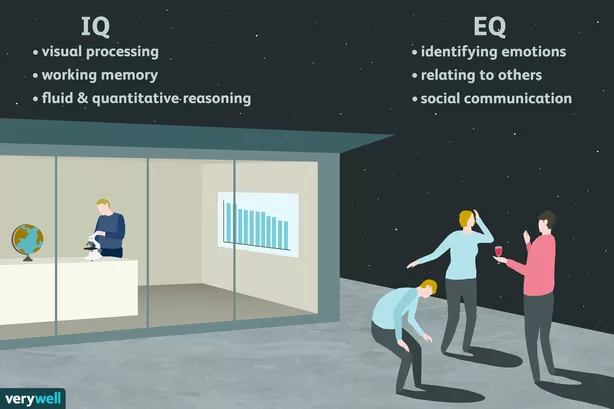

EQ vs EQ
What is EQ and IQ and how are they different??
What is EQ and IQ and how are they different??
IQ (Intelligence Quotient) is the measure of a person’s ability to learn information and utilise it to solve problems or make predictions in a logical way. While it widely used to determine how ‘smart’ someone is, the downfall with with IQ tests is that it does not factor in other thinking abilities we possess.
EQ (Emotional Quotient) or emotional intelligence is the measure of a person’s ability to empathise/relate to others in social situations and the ability to self regulate, and understand their emotions. EQ describes a different set of thinking skills that relate to understanding oneself and creating meaningful interactions with others.
Image sourced from very well
Why is Emotional Intelligence important and why is it relevant to me?
Having high emotional intelligence is now well regarded and has been linked to job successes and building positive relationships. Having a high EQ means that the person is able to work well with different people in a rapidly changing environment that occur in our daily lives.
I think emotional intelligence is really important because it has a big affect on a person’s well-being especially in our current climate where people are anxious and stressed on a daily basis. If we learn to regulate our emotions and relate well to others, it could help elevate stress/anxiety and there would be less conflicts and misunderstandings between people.

Readings:
TTI Success InsightsHealthline
VeryWell Mind